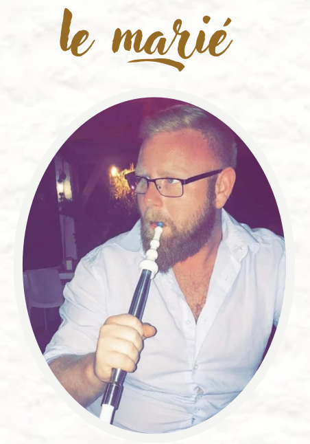

Notre Histoire

Il était une fois… deux âmes que la vie avait placées sur des chemins bien différents, jusqu’au jour où un simple message a bouleversé le cours des choses. Un message en mars 2021, un regard en juillet, et déjà, leurs cœurs parlaient le même langage. Très vite, ils ont formé une famille, à trois, un foyer tissé de rires et de tendresse. Une demande en fiançailles, un « oui » murmuré, et aujourd’hui, l’envie de célébrer un amour qui a su grandir, patiemment, intensément. Le 2 août 2025, au Gabon, là où les racines chantent et les traditions veillent, ils honoreront l’union de leurs familles lors d’un mariage coutumier vibrant d’émotions. Puis, le 16 août 2025, en France, ils scelleront leur promesse devant la loi et leurs proches, lors de leur mariage civil. Car parfois, il suffit d’un simple regard… pour trouver son éternité. Et c’est ainsi que Stéphanie & Axel continueront d’écrire leur histoire, main dans la main, le cœur apaisé et l’âme comblée… pour toujours.
Stéphanie, c’est une femme lumineuse, généreuse et profondément investie. Maman attentionnée, compagne tendre, elle est déterminée, courageuse et animée d’un amour sincère pour les siens. Elle sait écouter, chérir, soutenir. Une femme de cœur, toujours tournée vers l’autre.
Axel, c’est un homme à la fois solide et sensible, romantique et protecteur. Il sait surprendre avec de petits gestes pleins de douceur. Il est loyal, travailleur et plein de respect. Dans les silences comme dans les rires, il est cette présence qui rassure, ce pilier tranquille qui aime sans bruit mais avec profondeur.

À eux deux, ils forment une évidence. Une belle histoire d’amour née d’un hasard numérique, transformée en une réalité merveilleuse.